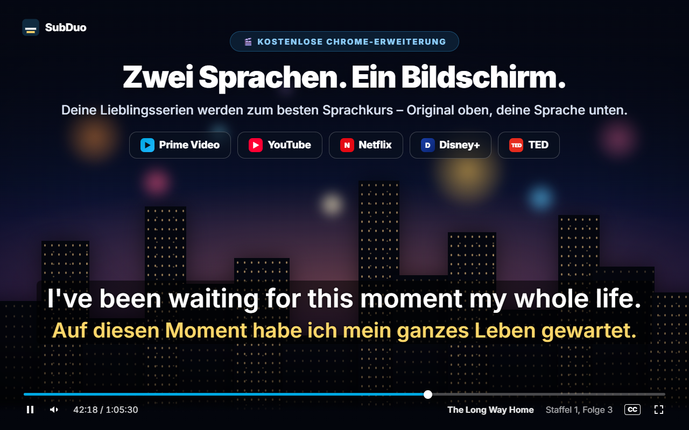
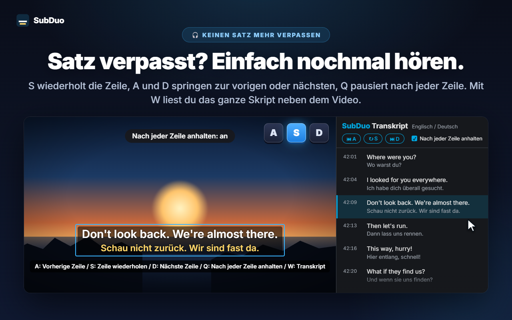
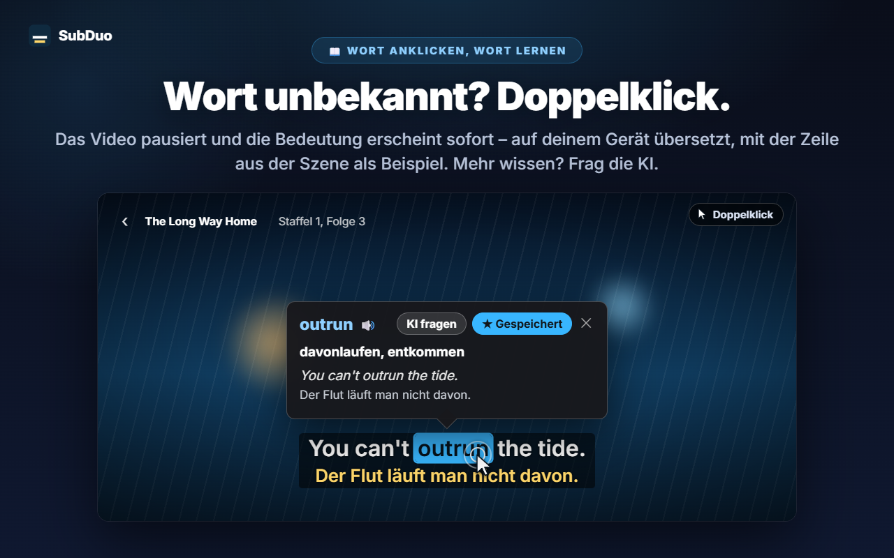
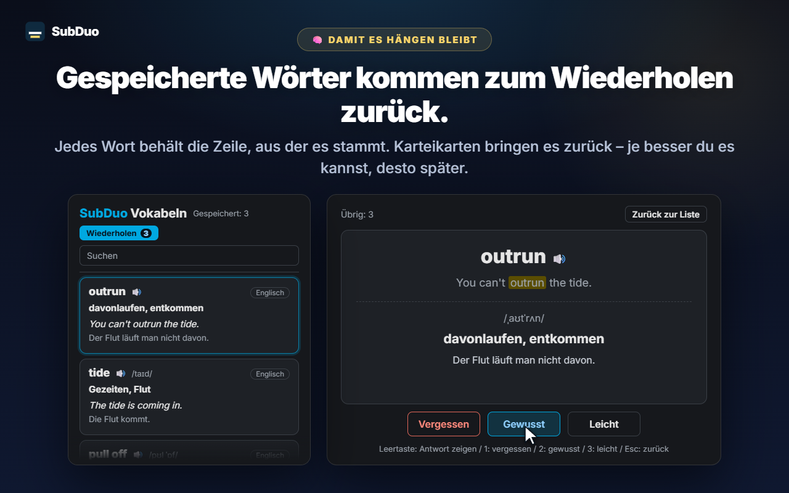

Zwei beliebige Untertitelsprachen
Jede Spur, die die Seite anbietet, wird beim Abspielen erkannt – auch die automatisch erzeugten Untertitel von YouTube. Wähle eine pro Zeile oder blende eine Zeile aus.
SubDuo zeigt zwei Untertitelsprachen gleichzeitig – das Original oben, deine Sprache unten. Doppelklicke auf ein Wort, um seine Bedeutung zu sehen, wiederhole eine Zeile mit einer Taste und behalte, was du lernst, in einer eingebauten Vokabelliste.
Nutzt die Untertitel, die jede Seite ohnehin anbietet · Kein Konto · Untertitel bleiben in deinem Browser
Streaming-Player zeigen immer nur eine Untertitelsprache. SubDuo fügt eine zweite hinzu – und die Werkzeuge, um damit zu lernen.
Bildschirme aus der Erweiterung, in deiner Sprache gezeigt.

Wähle zwei beliebige Untertitelspuren, die der Titel anbietet – das Original oben, deine Sprache unten. Zieh die Untertitel, wohin du willst, scrolle über einer Zeile, um ihre Größe zu ändern, und stelle per Rechtsklick Farben, Transparenz oder Unschärfe ein.

Drücke S, um die Zeile zu wiederholen, A und D, um zurück- oder vorzuspringen, und Q, um nach jeder Zeile automatisch anzuhalten. Mit W öffnest du das Transkript in der Seitenleiste von Chrome – beide Sprachen, Zeile für Zeile –, und ein Klick auf einen Eintrag springt dorthin.

Das Video pausiert und eine Karte zeigt sofort die Bedeutung – auf deinem Gerät vom integrierten Übersetzer von Chrome übersetzt, mit der Zeile aus der Szene als Beispiel. Alt+Ziehen markiert eine Wendung. Tippe auf „KI fragen“ für die Bedeutung im Kontext, die Aussprache und einen Beispielsatz.

Jedes gespeicherte Wort behält die Zeile, aus der es stammt. Durchsuche und filtere deine Vokabeln, hör dir die Aussprache an und wiederhole mit Karteikarten – je besser du ein Wort kannst, desto länger dauert es, bis es wiederkommt.
Kein Konto, keine Einrichtung. Installieren und auf Play drücken.
Installiere SubDuo aus dem Chrome Web Store und spiele dann ein Video auf Prime Video, YouTube, Netflix, Disney+ oder TED ab.
Klicke auf das SubDuo-Symbol und wähle eine Untertitelsprache für die obere und eine für die untere Zeile. Es erscheinen nur Spuren, die der Titel anbietet.
Doppelklicke auf Wörter, um sie nachzuschlagen, drücke A, S oder D, um Zeilen zu wiederholen, und öffne deine Vokabeln über das Popup.
Gemacht für alle, die beim Schauen lernen – mit Untertiteln, die nicht stören, bis du sie brauchst.
Jede Spur, die die Seite anbietet, wird beim Abspielen erkannt – auch die automatisch erzeugten Untertitel von YouTube. Wähle eine pro Zeile oder blende eine Zeile aus.
Doppelklick oder Alt+Klick auf ein Wort, Alt+Ziehen über eine Wendung. Die Wiedergabe pausiert und die Übersetzung erscheint auf dem Video – erstellt auf deinem Gerät.
Bedeutung im Kontext, Aussprache und ein Beispielsatz – in deiner Anzeigesprache. Bis zu 20 Erklärungen pro Tag, kostenlos.
Wörter mit einem Klick speichern, durchsuchen, nach Sprache filtern und mit 🔊 anhören. Karteikarten zeigen Wörter, die du schon kannst, in größeren Abständen.
A für die vorherige Zeile, S zum Wiederholen, D für die nächste. Q hält nach jeder Zeile an. Stell eine Zeile unscharf, um dich zu testen, und zeig dann zur Kontrolle darauf.
Jede Zeile in beiden Sprachen neben dem Video. Die aktuelle Zeile ist hervorgehoben; ein Klick auf einen Eintrag springt dorthin. Mit W öffnest du es.
Ziehen zum Verschieben, Scrollen für die Größe einer Zeile, Pfeiltasten zum Feinjustieren, links, mittig oder rechts ausrichten. Rechtsklick für Farbe, Transparenz und Unschärfe je Zeile.
Große Untertitel auf YouTube, dezente auf Netflix – Einstellungen werden pro Seite gespeichert und über dein Chrome synchronisiert.
Menüs, Übersetzungen und KI-Erklärungen nutzen die Anzeigesprache deiner Wahl – unabhängig von der Sprache von Chrome.
SubDuo liest die Untertiteldateien, die jede Seite ohnehin an deinen Browser schickt, und zeichnet sie dort. Nach außen geht nur ein Ausdruck, zu dem du die KI fragst, zusammen mit seiner Untertitelzeile.
Untertitel werden in deinem Browser verarbeitet und gezeichnet. Deine Einstellungen, deine Vokabelliste und dein Verlauf werden nicht an den Entwickler gesendet. Wortübersetzungen laufen auf deinem Gerät mit dem integrierten Übersetzer von Chrome.
Wenn du auf „KI fragen“ tippst, gehen der markierte Ausdruck, seine Untertitelzeile und die andere Zeile auf dem Bildschirm, die Sprachcodes und eine zufällige Gerätekennung (für das Tageslimit) an den SubDuo-Server, der OpenAI um die Erklärung bittet. Deine IP-Adresse wird für den Betrieb des Dienstes verarbeitet.
Es gibt nichts, wofür du dich anmelden musst. Die Erweiterung enthält keine Werbung und keine Analysetools.
„storage“ für Einstellungen und Vokabeln, „scripting“ zum erneuten Verbinden offener Tabs nach Updates, „sidePanel“ für das Transkript und Zugriff ausschließlich auf die fünf unterstützten Seiten.
In Sekunden aus dem Chrome Web Store installiert